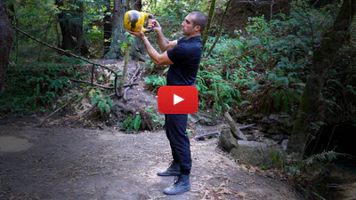

B581 · Keep your hands from tearing in the KB snatch
Hello {first_name},
When your hands start tearing it doesn’t matter how much strength or endurance you have left in the tank. Then it takes a week or two (or three) for your hands to heal.
INSTEAD, learn how to grip the kettlebell handle the right way to avoid tears.
You’ll need to practice with a lighter kettlebell, but once you’ve got it down, your ability to perform in movements like the kettlebell snatch will improve. You’ll finally address the most common limiting factor - grip.
In this under 5 minute video you’ll learn
And most importantly, you’ll be able to get a better training effect when the skin on your hands isn’t tearing off!

Happy training! Mike
|